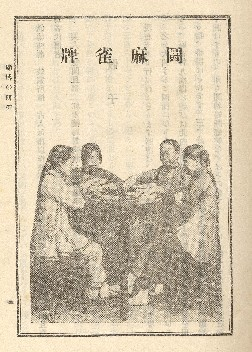

日本語で書かれた最初の麻雀書といえば、肖閑生（しょうかんせい）の麻雀詳解。大正６年12月、上海において刊行された。
肖閑生（しょうかんせい）なんていうと、いかにも中国人みたいな名前だが、これはペンネーム。意訳すれば「暇つぶし生」というほどの意味。
書影があるくらいだから、麻雀詳解が現存していることは間違いない。しかしσ(-_-)は現物を見たことはない。つまりσ(-_-)も持っていないし、現時点では麻雀博物館にもない。ほいじゃあ誰が持っているのかと云えば、おそらく故・手塚晴夫氏（もと日本麻雀連盟理事長）。この書影は、手塚氏の著書、「南は北か」に掲載されたもの。
これほど現物が入手困難なのは、この本が日本ではなく上海で刊行されたものであること。もう一つは、大正６年という時点では、ほとんどの日本人は麻雀なんてゲームは知らないので、内地では全然売れなかったということが原因と思われる。
とにかく著者が誰か分からないだけでなく、実物さえも姿をみせない超幻の麻雀古書、出てきたら万単位の値がつくことだけは間違いない。
２番目が井上紅梅（いのうえ こうばい）による「麻雀」。大正８年６月、やはり上海で出版さた。といっても、これは単独の書物ではなく、井上紅梅が上海で刊行していた「支那風俗」という中国風俗研究誌の「賭博の研究(第３巻６号)」という分野に、骨牌や、牌九、昇官図などと一緒に紹介されたもの。
この支那風俗は月刊誌で、大正７年から大正10年にわたり、出版された。そして大正10年、上中下３冊セットにまとめられて出版された。

肝心の「麻雀」の項は、その中巻に収録されている。

肖閑生はペンネームだけで、どういう人物であったかまったく不明。しかし井上紅梅の方ははっきり分かっている。紅梅(こうばい)というのはもちろんペンネームというか雅号で、本名は井上進（いのうえすすむ）。
明治14年生まれで、父は中国との武器関係の貿易商であったという。幼ない頃、父と死に別れ、青年になってから銀座尾張町の井上商店の井上安兵衛の養子となった。
大正２年、井上商店から離れ、上海に渡った。そして５年経った大正７年に月刊誌「支那風俗」の刊行を開始したものである。
「支那風俗」というタイトルの月刊誌を刊行するくらいであるから、中国女性と結婚するなど、完全に中国の生活にとけ込んでいた。
※中国人である奥さんの名前は碧梅(へきばい＝青い梅、の意)。本人の雅号である紅梅は、これに対応。
「支那風俗」の中で麻雀を詳解はしたが、それはあくまで、中国の賭博ゲームの１種として取り上げただけ。本人も「麻雀を日本に紹介した」との認識はなかった。またその時点（昭和８年）では、日本でも、麻雀に対する興味はほとんどなかった。
しかし支那風俗が上中下３冊セットにまとめられて出版された大正10年の頃から、日本に於いて麻雀が普及しはじめた。そこで支那風俗に収録された「麻雀」の項を大幅に改定、書き下ろして出版したのが、「麻雀の取り方（T13.11.5・上海日本堂）」である。
※「麻雀の取り方」は、上海至誠堂からも同時発売された。
しかし麻雀詳解と同様、出版地が上海であったためか、あるいは時期尚早であったのか、ベストセラーとはならなかった。
※麻雀入門書ベストセラー第１号となったのは、大正14年４月、東京の文英堂から出版された林茂光(りんもこう)の「支那骨牌・麻雀」であった。

「支那骨牌・麻雀」は、表紙が赤かったため「赤本」と呼ばれてもてはやされた。現在でも「赤本」と言えば、林茂光の「支那骨牌・麻雀」を指す。しかし見ての通り、「麻雀の取り方」だって表紙が赤い....
なんともまぁ、同じような本を同じような体裁で出していても、ちょっと時期が先行していたというだけで、後の方が有名になってしまうという見本みたいな状況となっている。
面白いことに、この時代でもっとも有名な英文入門書は、Ｊ．Ｐ．バブコックのRED BOOK。この本も表紙が赤かったためにその名がついた。日米を代表する当時の入門書が、それぞれ赤本とは面白い偶然。
※近年、井出洋介プロrがノアール出版社から赤本シリーズという麻雀書を刊行しているけれど、ひょっとしてこれにならったのかな....
余談はさておき。
麻雀入門書を出版したりしながら、そのまま中国で文筆関係の仕事をしていた井上紅梅であったが、そのうち奥さん（碧梅）が阿片 and 麻雀にのめり込んだ。奥さんがそんな風では面白くない。そこで本人も酒を飲む。その赤裸々な毎日を綴ったのが、「酒・阿片・麻雀(S5.6.1・萬里閣書房)」。
麻雀入門書は売れなかったが、こっちはよく売れた。これは日本で出版された事もさることながら、当時の日本は麻雀ブームの真っ盛り。おまけに多くの日本人が興味を抱いている中国人の暮らしぶりが赤裸々に書き込まれている。そこでよく売れたらしい（じっさい、いま読んでも面白い）。
そんなわけで今でもたまに古書店で見かけるが、値段がワケワカメ。程度とか函つきとかの差は別として、函無し／程度並で３千円〜５千円くらい。函アリ／程度上で、もう２，３千円アップというのがσ（-_-）の感覚。しかし店によっては３万円以上の値が付いていることがある。古書だから値はあってないことはよく分かるけれど、それにしてもちと高い。
|